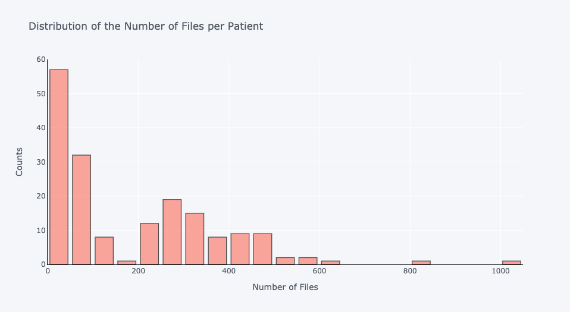
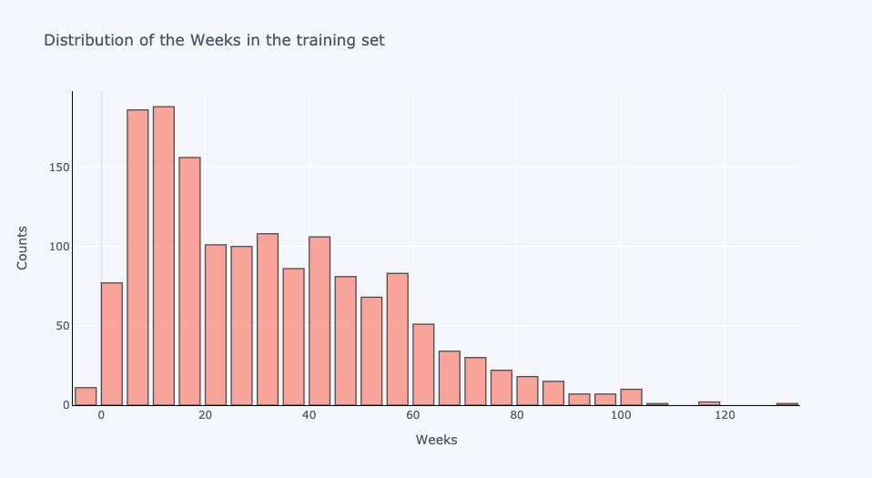
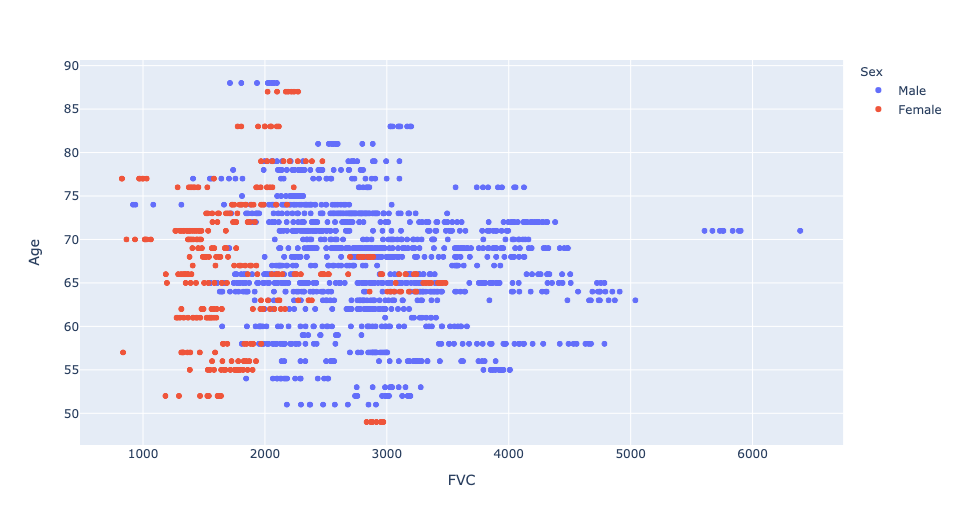
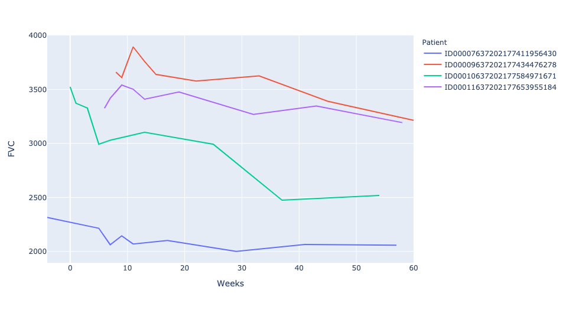
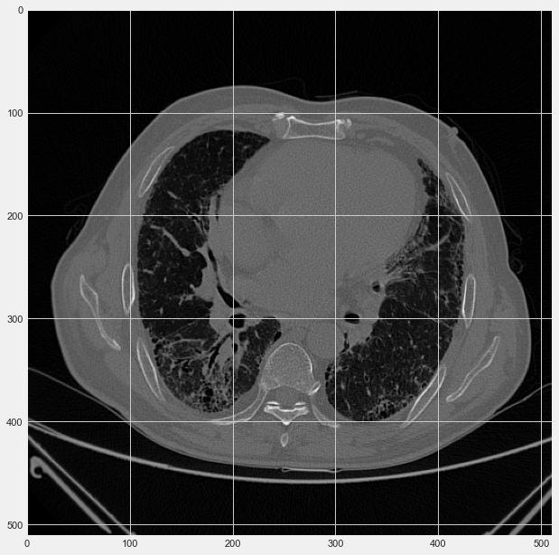
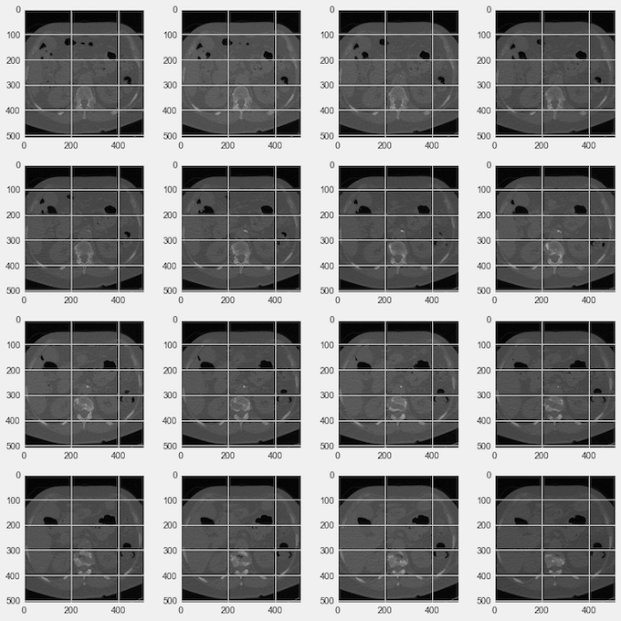

How Machine Learning tools can help Identify Pulmonary Fibrosis
This is a project I worked on for a machine learning course. The result is not a fully trained model,
but rather an exploration of a complex dataset and research on what cutting edge techniques a model should
use in order to be both accurate and efficient.
Firstly then, what is the issue at hand? Pulmonary fibrosis is a lung disease that occurs when lung tissue
gets damaged or scarred. The thickened, stiff tissue makes breathing more difficult as your lung function
declines. Lung function is usually measured using a spirometer, which measures the volume of air a patient
can inhale and exhale. The challenge is to predict future lung function decline in patients with pulmonary
fibrosis based off a current CT scan, some metadata and a baseline spirometer reading called forced vital
capacity (FVC). A model that could do so would provide doctors with a good indication
of how serious a patients ailmment is. The images and data explored in this project are from the Open
Source Image Consortium (OSIC) and are real clinical data.
Data Exploration - Metadata
The total training data set contains over 34,000 images from 176 patients and is about 13 GB of data.
Additionally there is also a spreadsheet with metadata (age, sex, smoking status) of all 176 patients and
around 1549 FVC measurements at different time periods. Let's explore the distribution of all this data.
All of the following plots were produced using plot.ly and python - please look at this
Jupyter Notebook
for more information.

The above graph shows that the number of files per patient is very variable, where each file represents one image of a CT scan.
The average patient has 187 files, however some patients have up to 1018 files. This means our eventual model will have to find a way to work with
a differing number of inputs.

There are some negative values in weeks. These signify measurements taken before the baseline CT scan. This also shows the
distribution of the number of FVC values we have per patient. Since weeks correlates perfectly to FVC, ie for every week a patient went in he would
have a corresponding FVC value for that week.

There is a clear difference in FVC measurements for females and males. Males tend to have higher FVC measrurements.
The trend between FVC and age slightly less apparent, but on the whole older people have lower FVC values.

As we can see for most of the patients, FVC decreases as the weeks go by. However there are irregularities and some variations in FVC in that it does not
always go down. Furthermore the amount it decreases by is also very variable. Hence, the metadata can only predict so much and we will need our model to
extract significant amounts of information from the CT scans.
Data Exploration - CT Scans
A computerized tomography (CT) scan is shared in files called a DICOM's. Images are 2D whereas CT scans model 3D objects over time. Hence, each CT
scan has multiple images that range across body parts and time.


Patient id..........: ID00296637202279895784347 Modality............: CT Body Part Examined..: Chest Image size.......: 512 x 512, 524288 bytes Pixel spacing....: [0.714844, 0.714844]
The image on the left shows a singular CT scan or a cross-section of a patients lungs. The image on the right shows a 16 such cross-sections
laid next to each other. Below them is the patients metadata which is embedded in the DICOM image. Essentially, there is a lot of data and information present within these
CT scans, and so they should help predict FVC quite well if we can properly train a model.
Approach - what kind of CNN should we design?
Due to the nature of the data set there are some difficulties in designing a CNN. For one the required output is actually a prediction of every patient's FVC
measurement for every possible week in order to avoid potential leakage. This means we need to output around 120 predictions per patient.
One possible approach is to sample different images from each patient and run them through a CNN. After the convolutional filters, we can then add some fully connected
layers where we also input the patients metadata (age, smoking status, gender) and have out the final output layer be 120 nodes where each output corresponds to a
week’s FVC measurement. These final few fully connected layers would be doing a regression task as the final output for each node is a continuous number.
The convolutional filters would be modelled on SqueezeNet, a pre-existing CNN architecture which is very accurate on identifying image sets and relatively strealined.
Additionally, weighted sums of different feature maps should be used in between and feature maps shoule be concatenated and averaged with a Global Average Pool Layer.
This helps combine spatial information from early layers and features information from later layers.
Figure Caption: The proposed custom CNN. There are mulitple convolutoinal, fire, pool and softmax layers. Spatial information contained in the feature maps from the second custom
Fire Module are weighted with the feature maps of the last custom Fire Module.